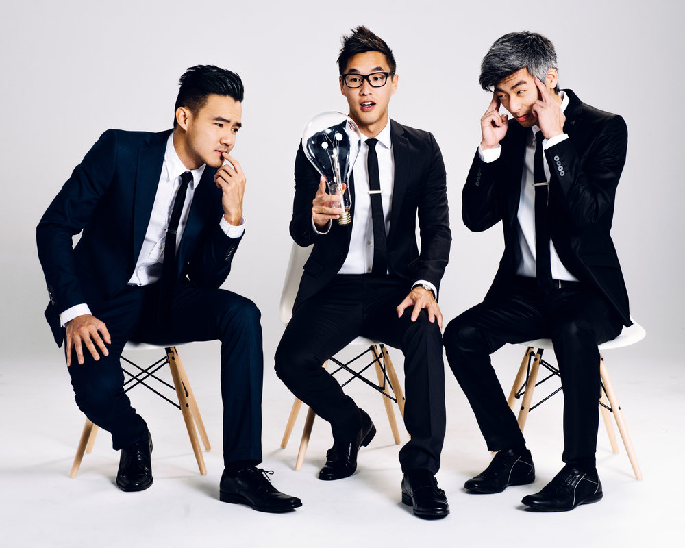
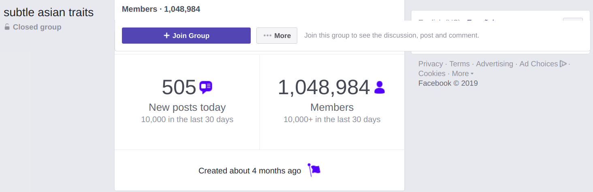

Asian Americans still aren't the most represented in our country; they're still seen as a model minority whose role models are stereotypical Asian characters written by people who aren't a part of the culture. However, it has gotten better the past few years as representation both in front of the camera and behind has increased.
Most Asians in media have been depicted stereotypically, with movie and TV characters written with common American stereotypes. Asian American actors are often asked to speak with a “native” accent rather than an American one, and they are asked to depict incredibly high achieving or as martial arts masters. This isn’t the type of media representation that we need; Asian Americans aren’t looking to be represented in the same way from movie to movie.
With movies like “Crazy Rich Asians” and shows like “Fresh Off The Boat,” we find characters that Asian Americans can relate with. There are characters that we can look up to without getting tired of following the same stereotypes that are written for us.
WongFu Productions, 2015. Photo: Mochi Magazine/Melly LeeWith the rise of YouTube, channels like WongFuProductions and Nigahiga provided a channel for Asian American youth to connect with each other and remind each other of the struggles and issues we as a group face.
More recently, a Facebook group known as subtle asian traits has exploded in popularity, and has gathered over a million members in less than half a year. It’s a group that invites Asians from around the world (starting from Australia) and provides a forum for college-age Asians to relate and talk about common struggles.